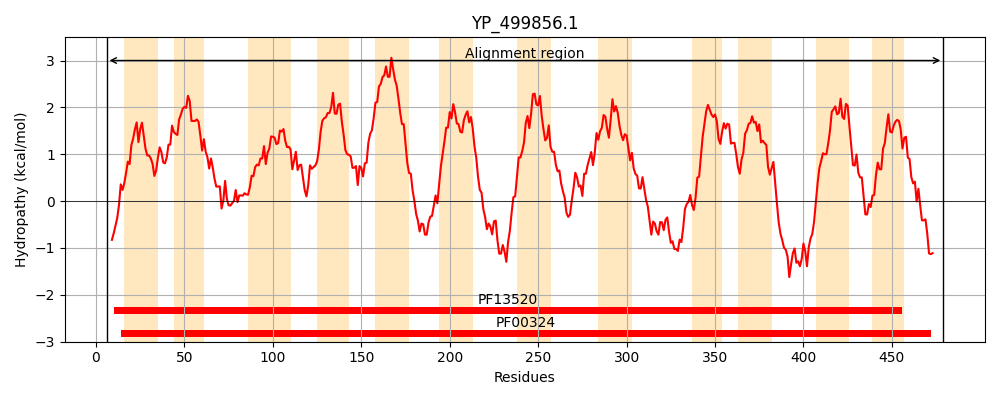
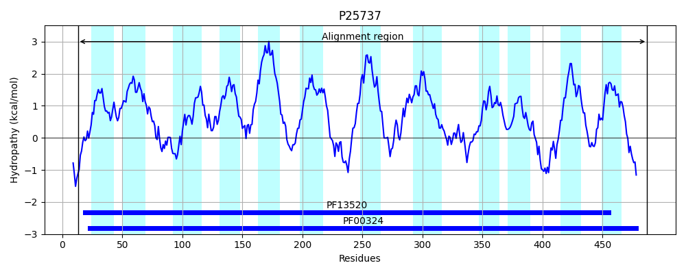
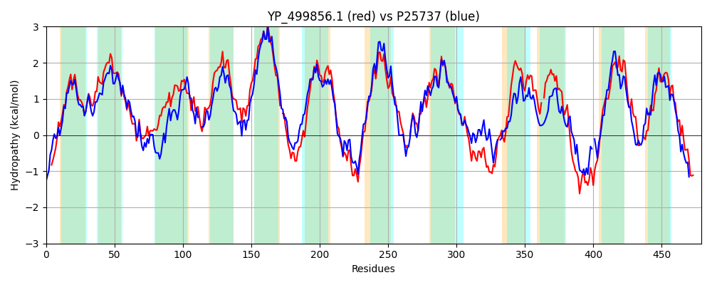

Hit Accession: P25737
Hit TCID: 2.A.3.1.2
Hit Description: gnl|BL_ORD_ID|9563 gnl|TC-DB|P25737|2.A.3.1.2 Lysine-specific permease - Escherichia coli.
Mach Len: 479
e:0.000000
Query TMS Count : 12
Hit TMS Count: 12
TMS-Overlap Score: 10.800000
Predicted Substrates:CHEBI:5584;hydron, CHEBI:25094;lysine
BLAST Alignment:
Score: 1094 , Bit scores: 426 bits, E-value: 8.2e-146, Alignment length: 479, Percentage identity: 46
Query: 6 MNRSLNSRHISMIAIGGAIGTGLFVATGNIISQAGPGGAILAYLVIGVMLYFLMSSIGELATFYPVSGSFSSYSTRFIDSSLGFTMGWLYWALWSLVTSVDVIVASNVLYFWDTFKFFHPITWSLIFITILLLLNIFSVKSFGETEFWLSLIKVLTIIVFVIFGFLMIFGIL-GGHTYGFENYTKGQAPFVGGISGFLGVLLVAGFSVGGTEVVAVTAGESDDPKKSMPKAIKQVFWRILLFYVLSIAVIGAIIPYTDPSLLRAS-SSISQSPFTIVFDRVGIAFAASVINAVILTSLLSAANSGVYTTGRMLYSLSSDKKAPQFLSKLNKTTKLPLRALLTTYAVVVIVIIYANFNSNAVFN-LLEIIGSMIIVVWGSSIWSQIRLRQAIKKQGQDPNKVLPYKAPFYPLGPIIVITTLLFLLFGGSVEYILKD--QWLNAFKNFLPLIILALIYFIHKIIHKTKFVKLETINLKPHD 479
+ R L +RH++MIAIGG+IGTGLFVA+G ISQAGPGGA+L+Y++IG+M+YFLM+S+GELA + PVSGSF++Y +++ GF +GW YW W++ +VD++ A V+ +W F WS +F+ ++ LLN SV+ FGE E+W SLIKV T+IVF+I G LMI GI G G+ N+T G+APF GG + +GV ++ GFS GTE++ + AGES+DP K++P+A++QVFWRILLFYV +I +I IIPYTDPSLLR IS SPFT+VF G+ AA+V+NAVILT++LSA NSG+Y + RMLY+L+ D KAP+ +KL++ +P AL T + + + + F + V+ LL G + W S R R+ QG D N LPY++ F+PLGPI L + G + E LKD W ++ + + +I+F +K+I T FV+ + +D
Sbjct: 13 LRRELKARHLTMIAIGGSIGTGLFVASGATISQAGPGGALLSYMLIGLMVYFLMTSLGELAAYMPVSGSFATYGQNYVEEGFGFALGWNYWYNWAVTIAVDLVAAQLVMSWW--FPDTPGWIWSALFLGVIFLLNYISVRGFGEAEYWFSLIKVTTVIVFIIVGVLMIIGIFKGAQPAGWSNWTIGEAPFAGGFAAMIGVAMIVGFSFQGTELIGIAAGESEDPAKNIPRAVRQVFWRILLFYVFAILIISLIIPYTDPSLLRNDVKDISVSPFTLVFQHAGLLSAAAVMNAVILTAVLSAGNSGMYASTRMLYTLACDGKAPRIFAKLSR-GGVPRNALYATTVIAGLCFLTSMFGNQTVYLWLLNTSGMTGFIAWLGIAISHYRFRRGYVLQGHDIND-LPYRSGFFPLGPIFAFILCLIITLGQNYEAFLKDTIDWGGVAATYIGIPLFLIIWFGYKLIKGTHFVRYSEMKFPQND 487 | Protein Hydropathy Plots: |
|---|
|  |  |
Pairwise Alignment-Hydropathy Plot:
|
|---|
|  |